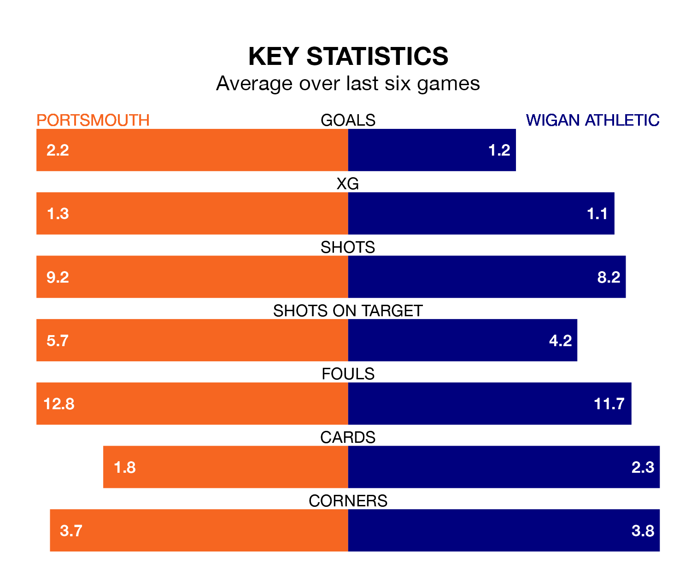

Portsmouth are heavy favourites to keep all three points at home in Saturday's kick-off against Wigan Athletic.
Pompey, who sit top of EFL League One with 44 games played, are priced at 1.4 to seal victory at Fratton Park.
Sitting nine places and 30 points behind them in the table, Wigan are 6.7 to win with *Betting Company*, while the draw is at 4.2.
With 75 goals in 44 games so far this season, Portsmouth are scoring more than average in the league with 1.7 goals per game. And they are conceding fewer than average, letting in 39 goals at a rate of 0.9 per game.
Wigan, meanwhile, are average scorers, with 1.3 goals per game. They have conceded 1.2 goals per game.
In Colby Bishop, Pompey have one of the league's sharpest shooters so far this season. He has notched 21 goals in 42 appearances, to sit second in the scoring charts.
His goal rate of one every 162 minutes is quicker than that of Stephen Humphrys, Athletic's top scorer with a goal every 235 minutes, and a total of nine goals in 38 games.
In the last 10 years, Portsmouth and Wigan have played each other on seven occasions. Portsmouth won four of them, Wigan two, and they drew once.
On average, Pompey scored 1.4 goals and the Latics 1.1 in those matches.
Their last meeting was on September 30, when Portsmouth won 2-1 away.
The home team are in good form in EFL League One, with four wins and two draws from their last six games.
With two wins and three draws over that period, the Latics' form is worse – they have taken nine points from 18, compared to Portsmouth's 14.
Portsmouth's last match was on Tuesday, a 3-2 win against Barnsley, with Bishop, Conor Shaughnessy and Kusini Boja Yengi getting the goals for Pompey.
Wigan beat Lincoln City 2-1 last time out, on April 13, with Charlie Hughes and Jonny Smith on the scoresheet.
Saturday's match will be refereed by Dean Whitestone, who has taken charge of three EFL League One games so far this season, issuing one red card and booking 13 players. He has awarded one penalty.
He is yet to oversee a match featuring either Portsmouth or Wigan this season.
Updated: 15:40 (UTC), 18/04/24